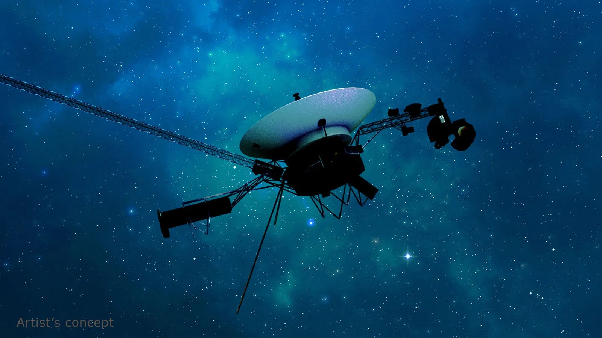

What is astronomy?
Astronomy is the scientific study of celestial objects, space, and the universe as a whole. It involves observing and analyzing the properties, behaviors, and interactions of various cosmic entities such as stars, planets, moons, asteroids, comets, galaxies, and nebulae.
Astronomy seeks to understand the origins, evolution, and physical processes of these objects, as well as their positions and movements in space. It encompasses a wide range of topics, from the formation and life cycles of stars and galaxies to the exploration of the solar system and the search for extraterrestrial life.
Why is it essential to learn about Astronomy?
Learning about astronomy is essential because it provides us with a fundamental understanding of the universe and our place within it. By studying celestial objects and phenomena, we gain insights into the origins, structure, and evolution of the cosmos. This knowledge helps us understand fundamental processes such as the formation of stars and galaxies, the lifecycle of celestial bodies, and the mechanics of cosmic events. Such understanding not only satisfies our innate curiosity about the universe but also contributes to the broader field of science by providing a context for other scientific discoveries and theories.
Astronomy has historically driven technological and scientific advancements. The development of advanced telescopes, space probes, and imaging technologies has often stemmed from the need to observe distant and faint objects in the cosmos. These technologies have broader applications beyond astronomy, contributing to innovations in fields such as imaging, data analysis, and materials science. For example, technologies originally developed for space exploration have led to advancements in medical imaging and communication technologies. By studying astronomy, we encourage the development of new technologies and methodologies that can have far-reaching benefits for various scientific and practical applications.
Astronomy has a unique ability to inspire and educate. The exploration of the cosmos captures the imagination of people of all ages and backgrounds, fostering a sense of wonder and curiosity about the universe. Learning about astronomy can spark interest in science and technology careers, promote STEM (Science, Technology, Engineering, and Mathematics) education, and encourage critical thinking and problem-solving skills. Additionally, understanding our place in the universe can offer a broader perspective on Earth and humanity, emphasizing the interconnectedness of all things and fostering a sense of global and cosmic perspective.
Main Concepts
Celestial Objects
Astronomy focuses on various celestial objects, including stars, planets, moons, asteroids, comets, and galaxies. Understanding these objects involves studying their formation, composition, behavior, and interactions. For instance, stars are massive balls of gas undergoing nuclear fusion, while planets orbit stars and can have moons and rings.
Solar System
This concept involves the study of our local planetary system, including the Sun, its planets, moons, dwarf planets, asteroids, and comets. Key topics include planetary orbits, the structure of planets, and the interactions between solar system bodies. The solar system is a microcosm of broader astronomical principles.
Galaxies
Galaxies are massive systems of stars, gas, dust, and dark matter bound together by gravity. There are different types of galaxies, such as spiral, elliptical, and irregular. Studying galaxies helps us understand the large-scale structure of the universe, the distribution of matter, and the formation and evolution of cosmic structures.
Stellar Evolution
This concept addresses the life cycle of stars, from their formation in stellar nurseries to their ultimate end stages as white dwarfs, neutron stars, or black holes. Stellar evolution involves understanding the processes that drive changes in a star’s structure and energy output over time.
Exoplanets
Exoplanets are planets that orbit stars outside our solar system. Studying exoplanets involves detecting and characterizing these distant worlds to understand their properties, potential habitability, and their role in the broader context of planetary systems.
Dark Matter and Dark Energy
These are two of the most mysterious components of the universe. Dark matter is an invisible form of matter that does not emit light but affects the motion of galaxies and galaxy clusters. Dark energy is a mysterious force driving the accelerated expansion of the universe. Both are crucial for understanding the universe's composition and evolution.
Explorations and Missions
Hubble Space Telescope (1990 - Present)
The Hubble Space Telescope has revolutionized our understanding of the universe by providing unprecedented images and data from space. Launched in 1990, Hubble has observed distant galaxies, nebulae, and exoplanets, contributing to the discovery of the universe's accelerating expansion and confirming the existence of dark energy. Its high-resolution observations have allowed for detailed studies of cosmic phenomena and deep space, fundamentally altering our view of the cosmos.

Voyager 1 and Voyager 2 Missions (1977 - Present)
The Voyager spacecraft, launched in 1977, have provided humanity with its first detailed views of the outer planets. Voyager 1 and Voyager 2 conducted flybys of Jupiter, Saturn, Uranus, and Neptune, delivering invaluable data about these distant worlds and their moons. Voyager 1, now in interstellar space, continues to send back information about the space environment beyond our solar system, extending our reach into the galaxy.
Apollo 11 Mission (1969)
The Apollo 11 mission was the first manned mission to land on the Moon, marking a historic achievement in human space exploration. Astronauts Neil Armstrong and Buzz Aldrin collected lunar samples and conducted experiments, providing insights into the Moon's composition and geology. This mission not only demonstrated human capability to explore other celestial bodies but also set the stage for future lunar and planetary exploration.

James Webb Space Telescope (2021 - Present)
The James Webb Space Telescope, launched in 2021, is the most advanced space telescope ever built. Designed to observe the universe in infrared wavelengths, JWST aims to explore the formation of the first galaxies, stars, and planetary systems. It is expected to provide detailed observations of exoplanet atmospheres, search for signs of habitable conditions, and investigate the origins of cosmic structures, pushing the boundaries of our understanding of the universe.
Facts about Astronomy
Despite the vast number of stars, planets, and galaxies, the majority of the universe is empty space. In fact, the distances between celestial objects are so enormous that if you could shrink down to the size of an atom, the nearest star to Earth would still be over 4 light-years away, and much of the space in between would be devoid of matter. This expansive emptiness is a fundamental characteristic of the universe, affecting everything from the movement of galaxies to the propagation of light.
While most people know about massive stars, the largest known star in terms of volume is UY Scuti, a red supergiant star. Located about 9,500 light-years away, UY Scuti has a radius around 1,700 times that of the Sun. This enormous size makes it a fascinating subject for studying the limits of stellar expansion and the life cycles of the most massive stars.
The Sun's magnetic field undergoes a complete reversal approximately every 11 years as part of the solar cycle. During this period, the Sun's magnetic poles switch places, which affects solar activity, including sunspots, solar flares, and coronal mass ejections. This magnetic reversal plays a crucial role in space weather and can impact satellite communications and power grids on Earth.
Neutron stars are among the densest objects in the universe. After a supernova explosion, the core left behind can compress the mass of up to 1.5 times that of the Sun into a sphere with a radius of about 10 to 15 kilometers (6 to 9 miles). This means a single teaspoon of neutron star material would weigh about 10 million tons on Earth. The extreme density of neutron stars provides valuable insights into the state of matter under intense gravitational and pressure conditions.
Galaxies are not static; they can collide and merge with one another. The Milky Way, for example, is on a collision course with the Andromeda Galaxy, which will occur in about 4.5 billion years. Such cosmic events are significant for understanding the large-scale structure and evolution of the universe. When galaxies merge, they can trigger new star formation and redistribute interstellar material, leading to the creation of new galactic structures.